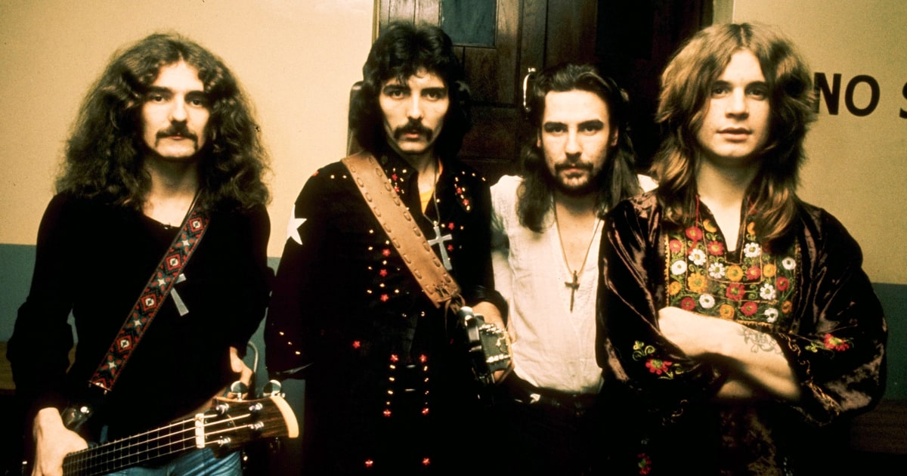
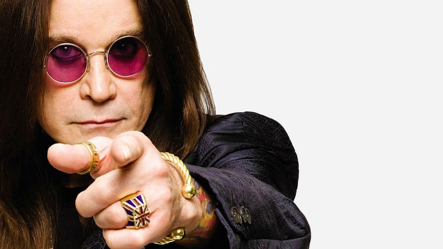

Black Sabbath a fost un grup britanic de heavy metal, numarandu-se printre pionierii genului. Formatia, care a fost infiintata in 1968, la Birmingham, este considerata a fi cea mai influenta din Heavy Metal. Formula originala a trupei era Ozzy Osbourne (voce), Tony Iommi (chitara), Geezer Butler (bas) si Bill Ward (baterie), formula care exista pana in 2016, desi, de-a lungul timpului, au avut loc multe schimbari de componenta. Black Sabbath continua sa aiba o influenta dominanta in heavy metal, gen pe care, de altfel, l-a creat. VH1's 100 Greatest Artists of Hard Rock a clasat grupul pe locul al II-lea, dupa Led Zeppelin. Pe 9 noiembrie 2011, membrii originali ai grupului au anuntat reuniunea si inregistrarea unui nou album.
De-a lungul timpului,formatia a lansat cateva albume etalon,precum: